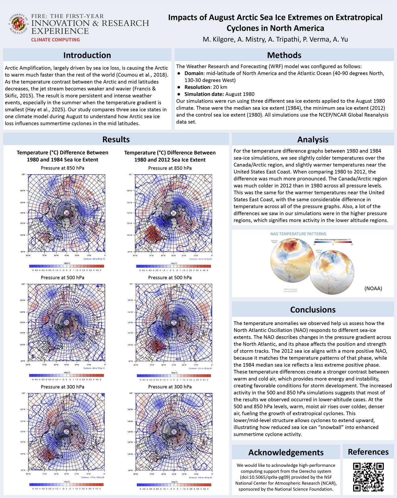

Climate Computing Research
Impacts of August Arctic sea ice extremes on extratropical cyclones in North America
Project Overview
A climate research study investigating how Arctic sea ice loss influences the formation and intensity of extratropical cyclones over North America, conducted through the University of Maryland's First-Year Innovation & Research Experience (FIRE) program. I served as a researcher on our team, configuring and executing climate simulations, and creating visualizations to analyze findings.
Research Methodology
We used the Weather Research and Forecasting (WRF) model to run climate simulations on NCAR's Derecho supercomputer, comparing three August sea ice scenarios applied to constant August 1980 atmospheric conditions: the 1980 control, the 1984 median minimum extent, and the 2012 record minimum extent (the smallest ever recorded at the time). All simulations used the NCEP/NCAR Global Reanalysis dataset to isolate the effect of sea ice variability on mid-latitude storm systems.
Key Findings
- Reduced sea ice correlated with stronger temperature gradients between Canada/Arctic and the U.S. East Coast
- The 2012 sea ice scenario produced the most pronounced temperature anomalies across all pressure levels
- Results suggest a more positive North Atlantic Oscillation under lower sea ice conditions, creating an environment more favorable for extratropical cyclone development
Reflection
This project gave me a new perspective on computer science applications into an entirely different field. Working within a structured academic research environment like FIRE taught me how to digest complex scientific literature on unfamiliar topics and communicate technical findings to a broader audience during our monthly all-team meetings.
Research Materials
